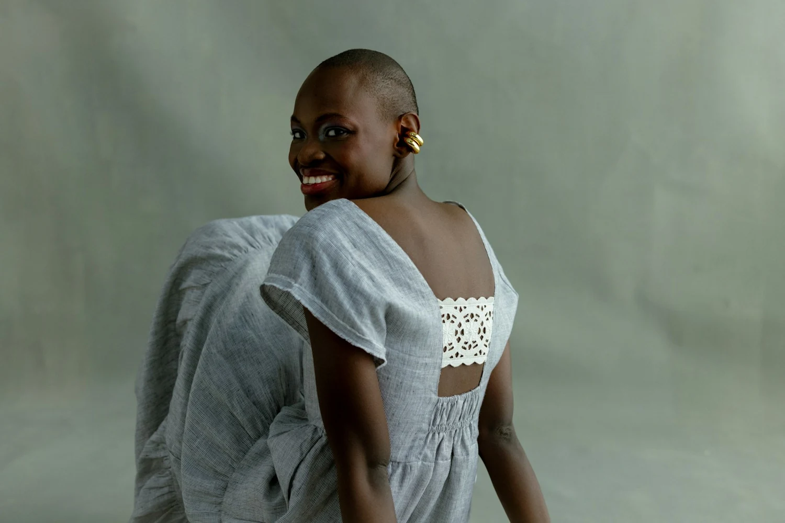

The style record.
Style ID, title, brand, category, source, image-rights information and links to the garment's views. Updates keep a snapshot history.
SQLite databaseVISUAL SEARCH FOR YOUR GARMENT ARCHIVE.
Upload a garment photo. Find the four closest previous styles in your own archive, with their images and product details ready to review.
See how retrieval works Set up your own archive ↗
FOR DESIGN, MERCHANDISING & SOURCING TEAMS.
Crumble makes a collection of garment photos searchable by appearance. Bring together the styles your team has already stored, then use a new reference image to find related pieces without knowing their names or IDs.
THE WORKFLOW
One connected path from the stored image
to the style your team wants to inspect.
Image files + style IDs, brand, category and source details.
Keep image copies linked to the right garment and its history.
The fashion model turns each view into a numeric vector.
Organise the vectors so new photos can be compared with them.
Front, back and detail photographs can belong to one style. Each image view gets its own embedding.
Drop, paste or choose a photo. Crop it to the garment.
Create a query embedding that can be compared with the archive.
Search visual similarity and apply the selected category filter.
Open the closest stored records, matched views and source details.
Multiple views are combined into one result per product. A smaller archive or category can return fewer than four styles.
WHAT YOUR WORKSPACE STORES
Style ID, title, brand, category, source, image-rights information and links to the garment's views. Updates keep a snapshot history.
SQLite databaseProcessed image copies linked to each record. Store front, back and detail views so the team can open more than a thumbnail.
Working JPEG copies; manage originals separatelyEmbeddings linked to image IDs and the model that created them. A versioned index makes those vectors available for similarity search.
Model-specific vectors + search indexFROM SEARCH RESULT TO STYLE RECORD
Four real-photo sample records.
Illustrative archive, not ranked search results.
Scoop back / White lace panel / Short sleeves
Photos published by Reistor under the Unsplash License. Source attribution does not imply a customer relationship. Photo credits ↗
KNOW WHAT A RESULT MEANS.
It searches the collection you import into your workspace. There is no built-in retailer scraper or shared global garment catalogue.
No. They are the closest available styles under the configured model and search settings. Review the garment and matched view. Similarity scores are ranking signals, not confidence percentages.
No. The fashion encoder uses a pinned, pretrained Marqo-FashionSigLIP model. Importing creates embeddings for your images and builds an index. Training is a separate process.
Yes, when the fashion encoder is configured. The app also supports title or brand lookup, category filtering and image cropping before photo search.
Styles already stored in your archive. Retrieved similarity does not establish a garment's launch date, original designer or copying history.
OPEN SOURCE. YOUR WORKSPACE.
Run Crumble with your own garment images and product records. The open-source application brings ingestion, image storage, embedding jobs, vector search and a reviewer interface together.
Start with a pilot collection and check search quality on your own garments. The current release is an alpha; it does not claim a validated accuracy target or enterprise-scale benchmark.
Set up your archive View the project on GitHubYOUR PREVIOUS STYLES, WITHIN REACH.